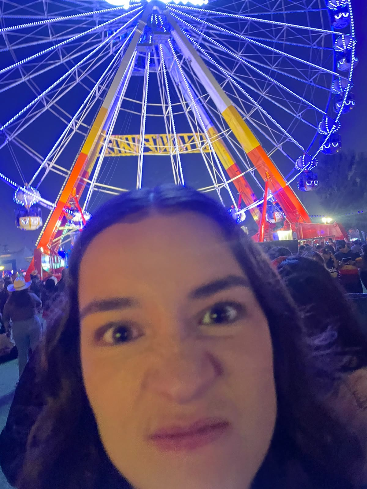

🎡 Edición feria nocturna
Sofía
La rueda de la fortuna da vueltas, la feria brilla… y Sofía le pone la cara más intensa de toda la noche. 😤

Toca la foto para encender la feria ✨
- 🎡 Fondo: una rueda de la fortuna más iluminada que árbol de Navidad.
- 😤 Expresión: nivel jefa final. Nadie le gana el duelo de miradas.
- ✨ Vibra: feria de noche, luces azules y pura actitud.